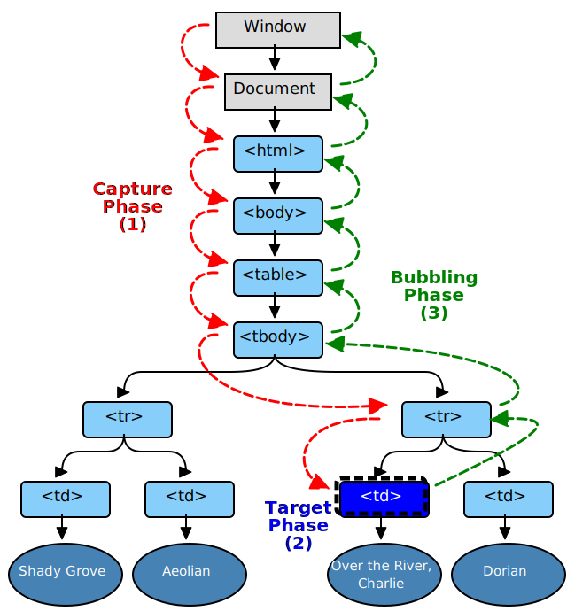
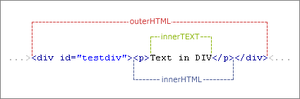

首先我们来回顾一下DOM事件的行为,事件从发生开始经历了三个阶段:
捕捉阶段(capture phase):从最上层元素,直到最下层(你点击的那个target)元素.路过的所有节点都可以捕捉到该事件.
命中阶段(target phase):如果该事件成功到达了target元素,它会进行事件处理.
冒泡阶段(bubbling phase):事件从最下层向上传递,依次触发父元素的该事件处理函数.

DOM标准中,定义了一系列的JavaScript事件,以及事件接口.其中,DOM Level 0 Event提供了类似onclick的属性来支持事件,
DOM Level 2 Event提供了addEventListener, removeEventListener, dispatchEvent,还有IE < 9的attachEvent.
两种事件处理模型的区别在于,
DOM Level 0 Event从Netscape浏览器开始就有支持,最初是通过在HTML中写入onclick属性来完成事件绑定:
<div onclick="clickHandler()"></div>
<script>
function clickHandler(){
console.log('clicked');
}
</script>
后来随着Web技术的进步,我们可以在JavaScript定义并且绑定事件了.此后我们可以做到事件处理和页面展示的分离, 在不支持JavaScript的浏览器中,
以及搜索引擎看来,页面变得更加地兼容.请看:
document.getElementById("#foo").onclick = function() {
console.log('clicked');
}
即时支持在JS中绑定事件,DOM Level 0 事件也存在一些问题.例如:
var el = document.getElementById("#foo");
el.onclick = function(){
console.log('clicked 1');
}
el.onclick = function(){
console.log('clicked 2');
}
是因为el.onclick的本质是对DOM元素属性的赋值,后一次事件绑定会使得前一次事件绑定失效.
2000年11月,W3C发布了DOM (Document Object Model) Level 2 Event,提供了更复杂的事件处理模型:
el.addEventListener("click", func, false);
通过addEventListener添加任意多个事件处理函数,第三个参数用来设置是否捕获来自子元素的事件,默认为false.
el.addEventListener("click", function(){
console.log('clicked 1');
});
el.addEventListener("click", function(){
console.log('clicked 2');
});
这样,两个事件处理函数都会得到执行.
DOM Level 2 Event还提供了removeEventListener(type, listener[, useCapture])方法,用来移除事件处理函数. callback是必选参数！
capture默认值为false:
如果同一个监听事件分别为“事件捕获”和“事件冒泡”注册了一次,一共两次,这两次事件需要分别移除.两者不会互相干扰.
var div = document.getElementById('div');
var listener = function (event) {
/* do something here */
};
div.addEventListener('click', listener, false);
div.removeEventListener('click', listener, false);
本文最开始已经给出了事件处理的三个阶段:捕获、目标、冒泡.在DOM Level 2 Event中,
如果addEventListener第三个参数为true则为添加捕获阶段的事件处理函数,否则为添加冒泡阶段的事件处理函数.
如果当前对象就是目标对象本身时,添加的事件处理函数只在目标阶段起作用,第三个参数无效.
来看例子吧:
<div id="l1">
<div id="l2"></div>
</div>
<script type="text/javascript">
var l1 = document.getElementById('l1');
var l2 = document.getElementById('l2');
l1.addEventListener('click', function(){ console.log('l1 capture')}, true);
l1.addEventListener('click', function(){ console.log('l1 bubbling')});
l2.addEventListener('click', function(){ console.log('l2 target')});
l2.addEventListener('click', function(){ console.log('l2 target, invalid capture')}, true);
</script>
为元素l1添加了一个捕获阶段的处理函数l1 captured,一个冒泡阶段的处理函数l1 bubbling.为l2添加了一个目标阶段的事件处理函数.
运行结果是:
l1 capture
l2 target
l2 target, invalid capture
l1 bubbling
其中,l2 target, invalid capture设置了捕获,但因为当前对象就是目标对象,捕获无效.该函数仍然作用于目标阶段. 既然捕获失效,
那么它的执行顺序就按照注册事件的顺序了,不会因为它设置了无效的捕获而提前得到执行.
target.DispatchEvent(event)也是DOM Level 2 Event提供的方法.用来从target开始分发事件event. 例如,我们可以创建一个clickDOM事件:
var event = new MouseEvent('click', {
view: window,
bubbles: true,
cancelable: true
});
l2.dispatchEvent(event);
会产生与点击完全相同的输出:
l1 capture
l2 target
l2 target, invalid capture
l1 bubbling
如果用l1来dispatchEvent会怎样？
l1 capture
l1 bubbling
因为l1确实拥有子元素,所以事件仍然会下行和冒泡.但事件的target并非l2,所以l2不会触发目标阶段的事件处理函数.
外行看来前端工程师的工作就是改页面(HTML、CSS),写脚本(JavaScript).当你意识到你不是在改HTML而是在操作DOM时,你就升级了！ 那么什么是DOM？
MDN: 文档对象模型 (DOM) 是HTML和XML文档的编程接口.它提供了对文档的结构化的表述,并定义了一种方式可以使从程序中对该结构进行访问,从而改变文档的结构,样式和内容.DOM 将文档解析为一个由节点和对象(包含属性和方法的对象)组成的结构集合.简言之,它会将web页面和脚本或程序语言连接起来.
说白了DOM就是浏览器为JavaScript提供的一系列接口(通过window.documnet提供的),通过这些接口我们可以操作web页面. 但DOM并不是编程语言,它是文档对象的模型,该模型是独立于编程语言的.比如我们在Python中也可以操作DOM:
import xml.dom.minidom as m
doc = m.parse("/path/chap1.xml");
doc.nodeName # DOM property of document object;
p_list = doc.getElementsByTagName("para");
所以Web前端常讲的DOM API (web 或 XML 页面) = DOM + JS (脚本语言)
DOM节点(Node) 通常对应于一个标签,一个文本,或者一个HTML属性.DOM节点有一个nodeType属性用来表示当前元素的类型,它是一个整数:
DOM节点创建最常用的便是document.createElement和document.createTextNode方法:
var el1 = document.createElement('div');
var el2 = document.createElement('input');
var node = document.createTextNode('hello world!');
元素查询的API返回的的结果是DOM节点或者DOM节点的列表.document提供了两种Query方法:
// 返回当前文档中第一个类名为 "myclass" 的元素
var el = document.querySelector(".myclass");
// 返回一个文档中所有的class为"note"或者 "alert"的div元素
var els = document.querySelectorAll("div.note, div.alert");
// 获取元素
var el = document.getElementById('xxx');
var els = document.getElementsByClassName('highlight');
var els = document.getElementsByTagName('td');
Element也提供了很多相对于元素的DOM导航方法:
// 获取父元素、父节点
var parent = ele.parentElement;
var parent = ele.parentNode;
// 获取子节点,子节点可以是任何一种节点,可以通过nodeType来判断
var nodes = ele.children;
// 查询子元素
var els = ele.getElementsByTagName('td');
var els = ele.getElementsByClassName('highlight');
// 当前元素的第一个/最后一个子元素节点
var el = ele.firstElementChild;
var el = ele.lastElementChild;
// 下一个/上一个兄弟元素节点
var el = ele.nextElementSibling;
var el = ele.previousElementSibling;
// 添加、删除子元素
ele.appendChild(el);
ele.removeChild(el);
// 替换子元素
ele.replaceChild(el1, el2);
// 插入子元素
parentElement.insertBefore(newElement, referenceElement);
// 获取一个{name, value}的数组
var attrs = el.attributes;
// 获取、设置属性
var c = el.getAttribute('class');
el.setAttribute('class', 'highlight');
// 判断、移除属性
el.hasAttribute('class');
el.removeAttribute('class');
// 是否有属性设置
el.hasAttributes();
DOM元素的innerHTML, outerHTML, innerText, outerText属性的区别也经常被面试官问到, 比如对于这样一个HTML元素:
<div>content<br/></div>.
innerHTML:内部HTML,content<br/>;outerHTML:外部HTML,<div>content<br/></div>;innerText:内部文本,content;outerText:内部文本,content;上述四个属性不仅可以读取,还可以赋值.outerText和innerText的区别在于outerText赋值时会把标签一起赋值掉,
另外xxText赋值时HTML特殊字符会被转义.
